Во всех проектах — по счетам и договорам или с оплатой картой. Наличные и Twint не предусмотрены. Для удалённой работы у нас есть сервис Mellow.io — через него оформляем сотрудничество с теми, кто не в Швейцарии. Учитывай это заранее.
Помощь с документами, мелкими договорённостями и контрактами. Подходит трёх- или шестимесячный практикантский контракт (напр. для Lehre).
Первый шаг: пройди два теста ниже, затем заполни форму 👇
Будущим сотрудникам — игра Cash Flow (денежный поток) фактически бесплатно: −99% по промо. Живая тренировка финансового мышления.
Записаться на игру · −99% →Желательно проживающий в Швейцарии, недалеко от Бадена (по договорённости). Поддержка сайтов, автоматизаций и цифровых проектов.
Первый шаг: пройди два теста ниже, затем заполни форму 👇
Будущим сотрудникам — игра Cash Flow (денежный поток) фактически бесплатно: −99% по промо. Живая тренировка финансового мышления.
Записаться на игру · −99% →Тексты и статьи, ведение Instagram, запуск и сопровождение кампаний, автоматизация рутинных процессов с помощью современных инструментов (в т.ч. AI, планировщики, аналитика). Подходит трёх- или шестимесячный практикантский контракт.
Первый шаг: пройди два теста ниже, затем заполни форму 👇
Будущим сотрудникам — игра Cash Flow (денежный поток) фактически бесплатно: −99% по промо. Живая тренировка финансового мышления.
Записаться на игру · −99% →Не тот, кто рисует дизайн — а тот, кто его воплощает. В галерее Kunstwerkstube мы делаем ребрендинг: у нас есть старая мебель (Altmöbel), которую нужно перекрасить в едином стиле, — а также, возможно, стены и декор.
Оплата проектная — обсуждаем по объёму. Срок — август.
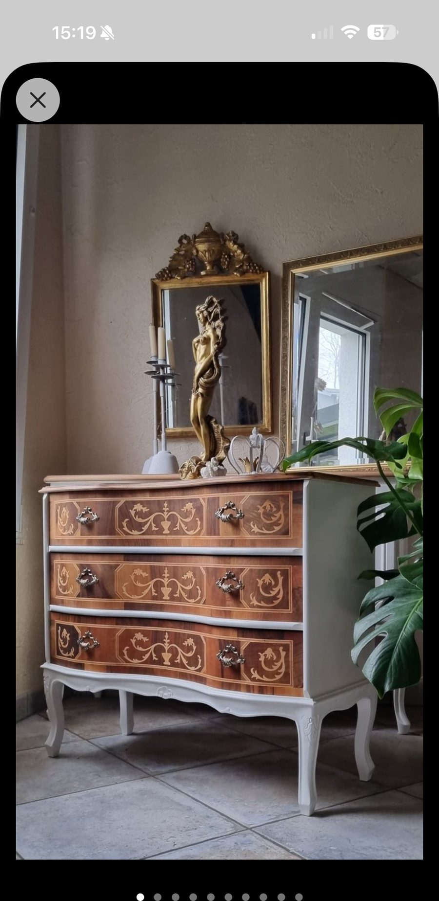
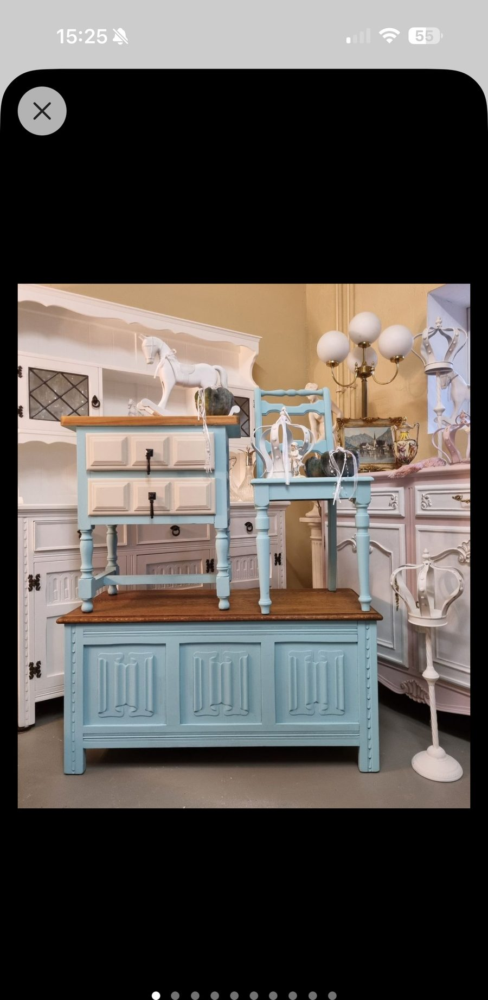
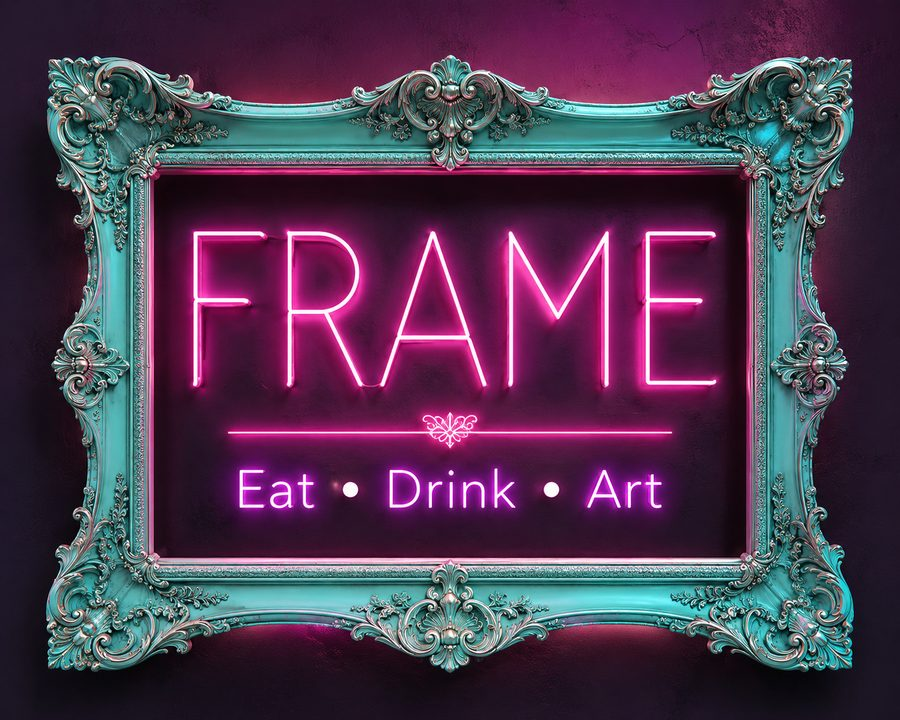
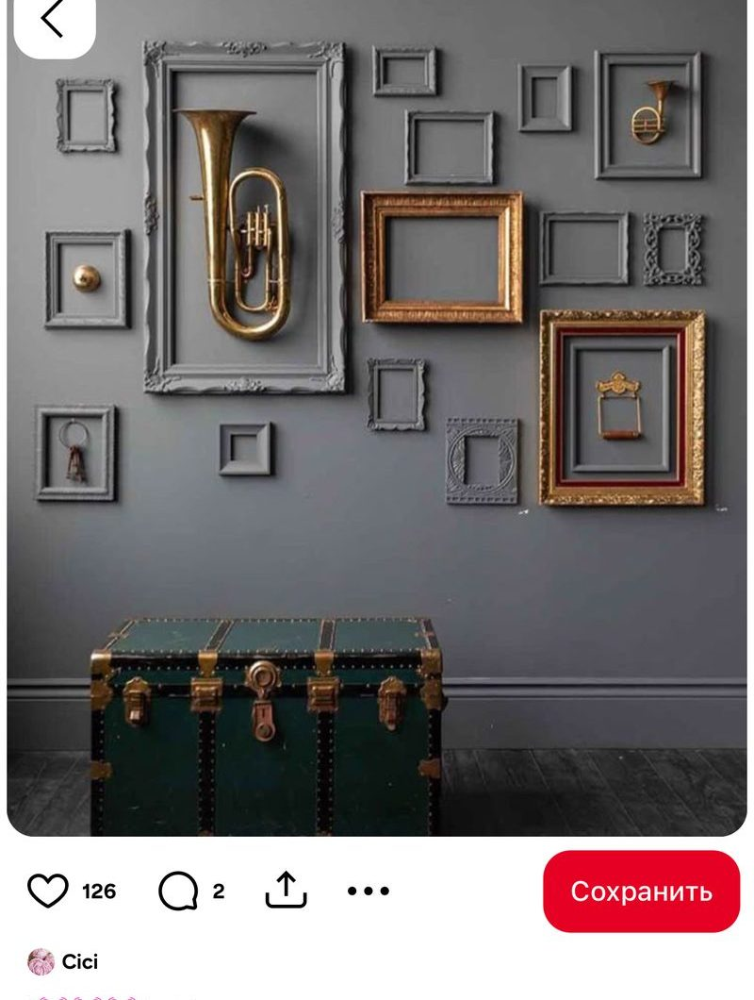
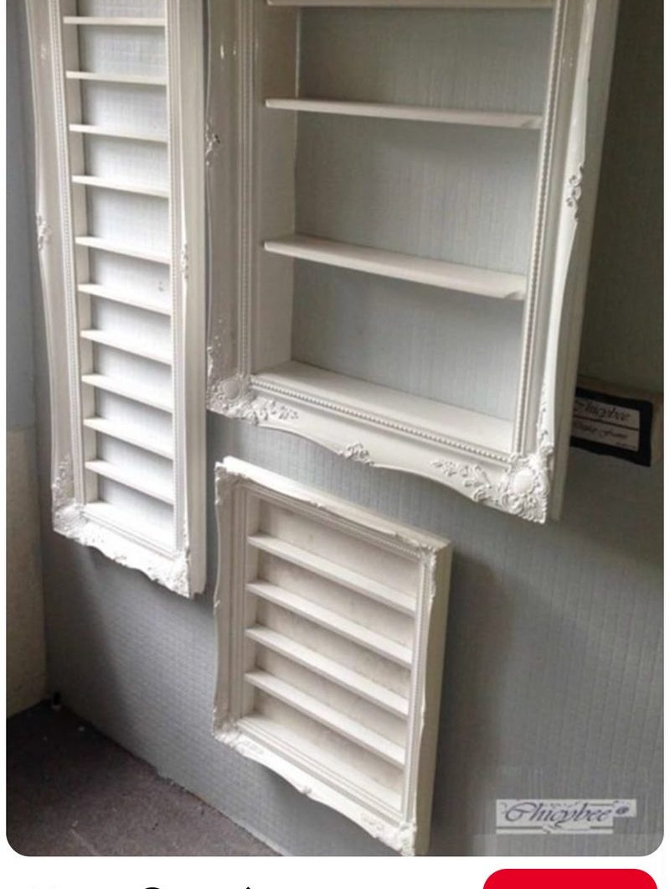
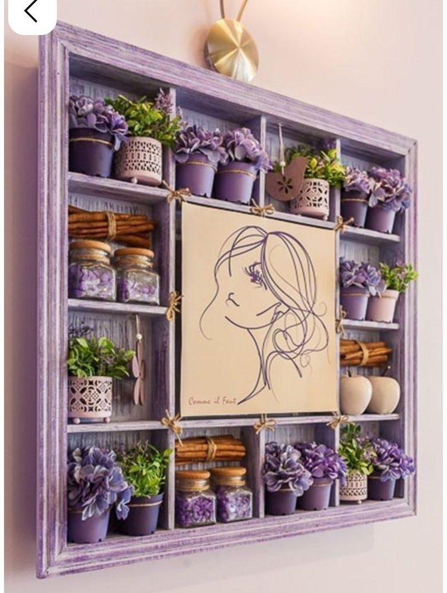
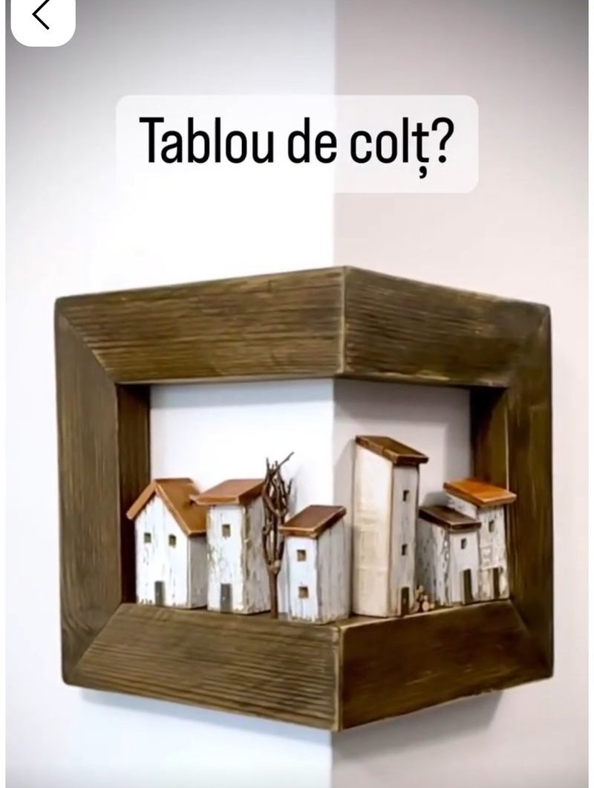
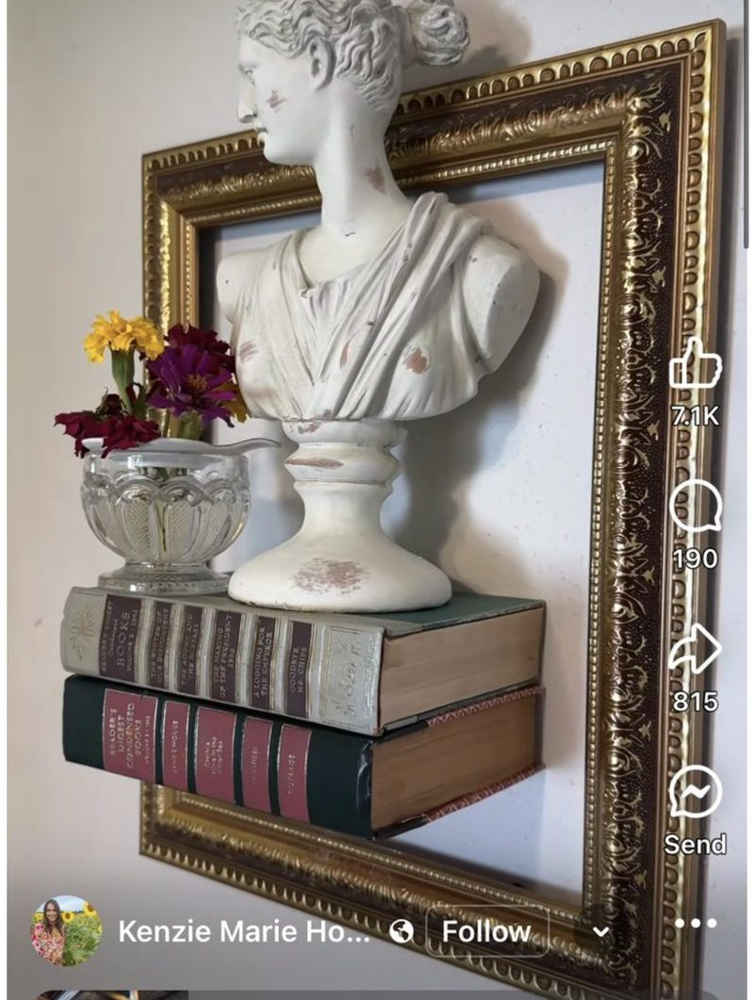
📎 Больше референсов и исходные видео — в Telegram-канале: открыть материалы →
По референсам и примерным размерам нужно изготовить мебель/декор для галереи. Мы не созваниваемся и не объясняем дополнительно — нужна предварительная оценка по заявке.
Отбираем по цене и срокам. С теми, кто подойдёт по параметрам, назначим встречу для подробного расчёта.
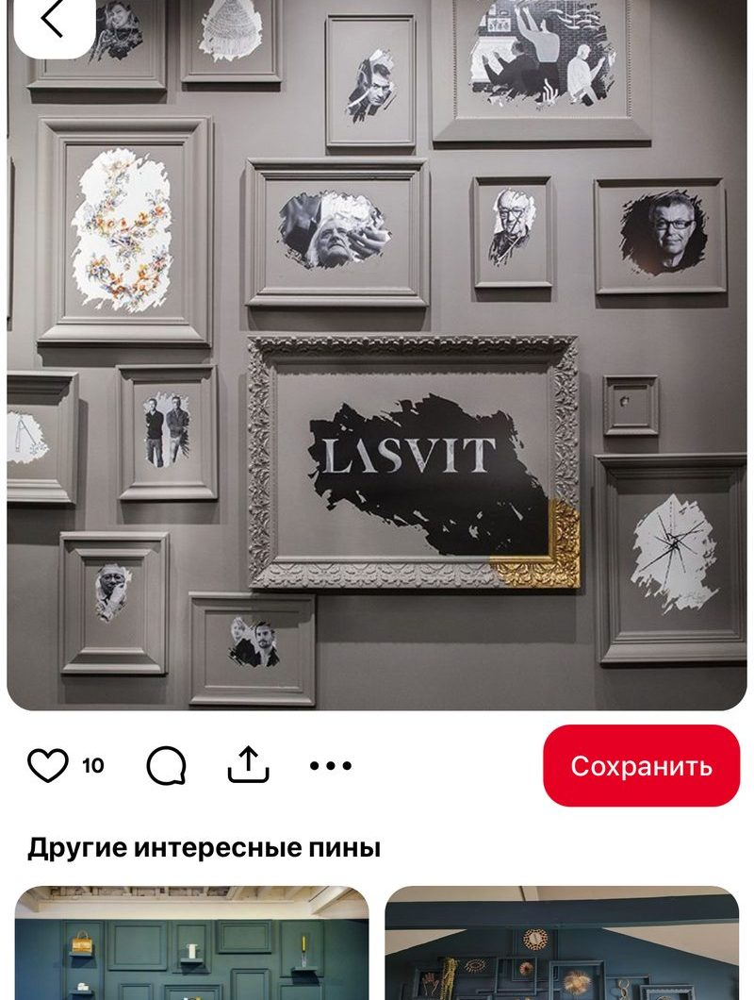
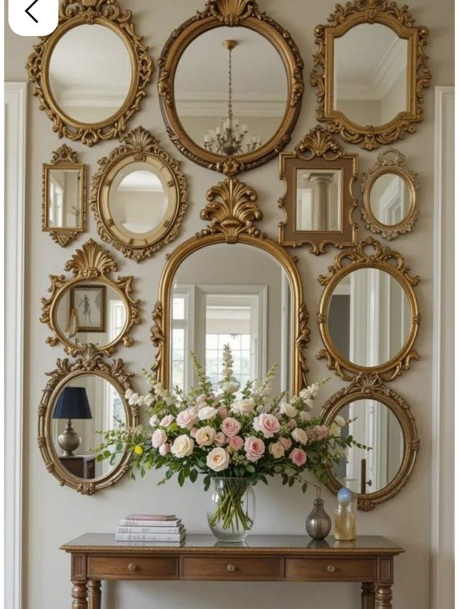
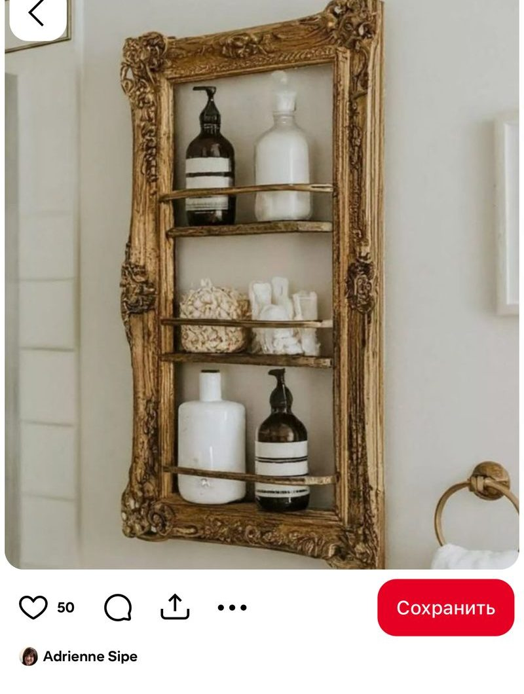
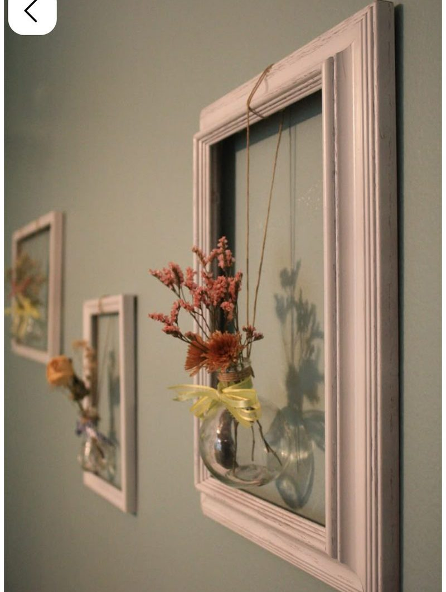
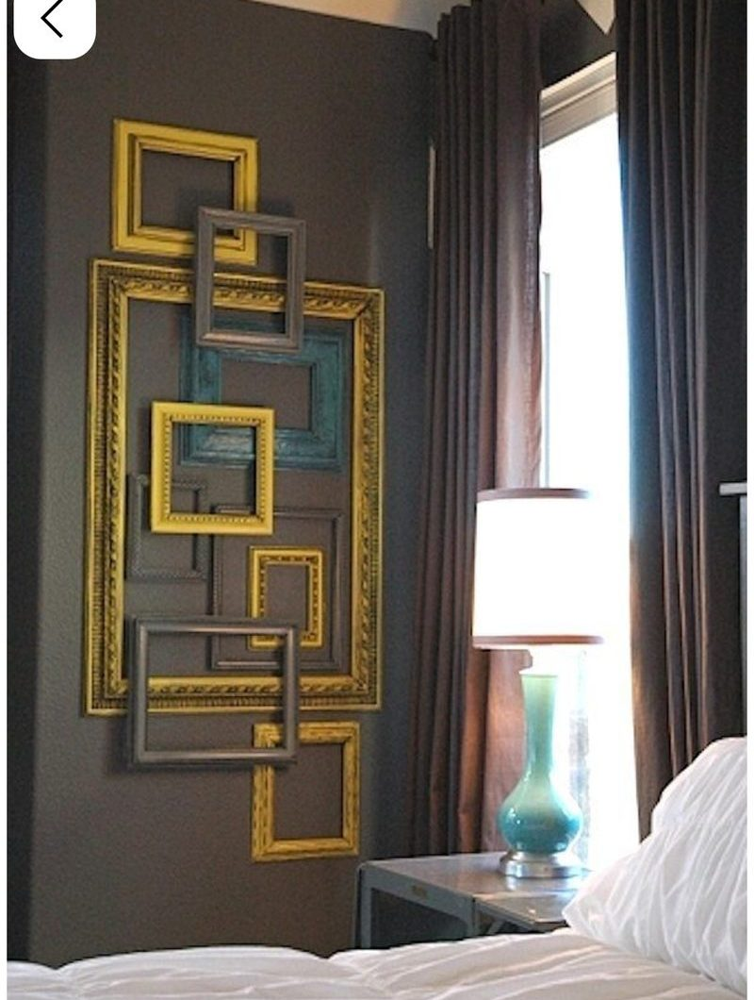
📎 Больше референсов и исходные видео — в Telegram-канале: открыть материалы →
По модели психолога Сальваторе Мадди: три опоры внутренней устойчивости — вовлечённость, контроль и принятие вызова. Показывает, как встречаются трудности и перемены.
По модели менеджмента Ицхака Адизеса (PAEI): четыре роли — Результат, Порядок, Идеи и Люди. Показывает, какая функция естественно закрывается в общем деле.